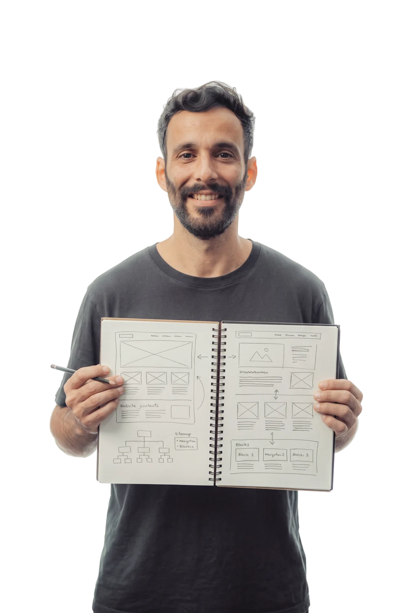
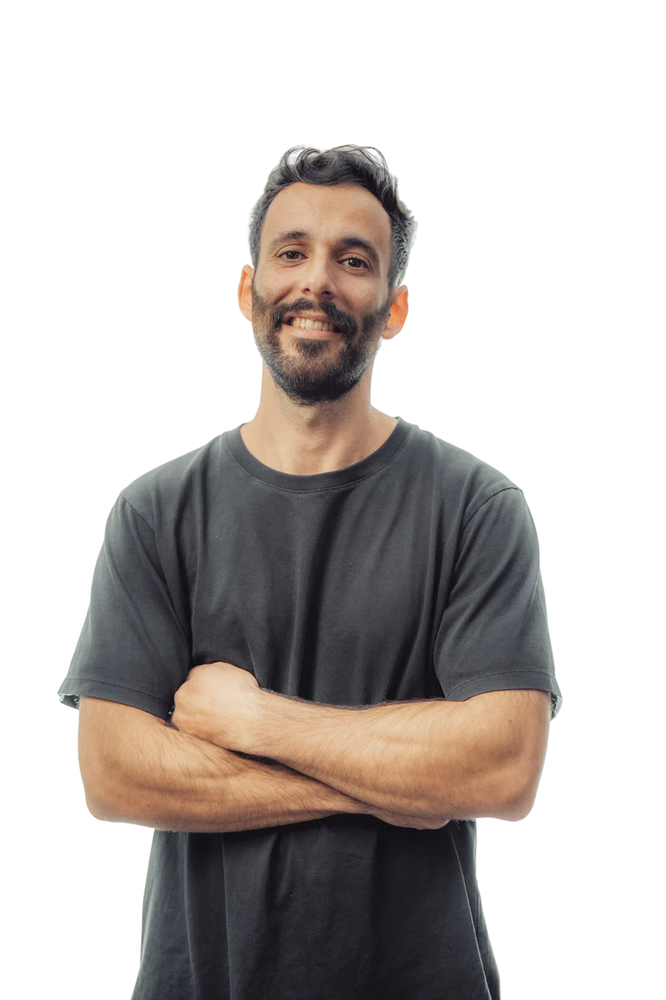
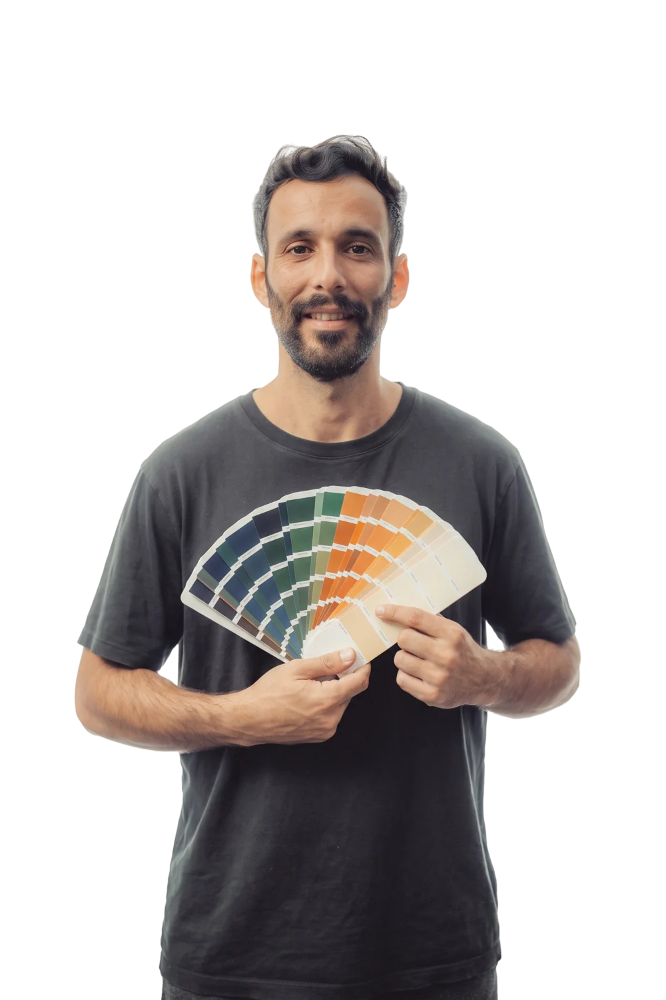
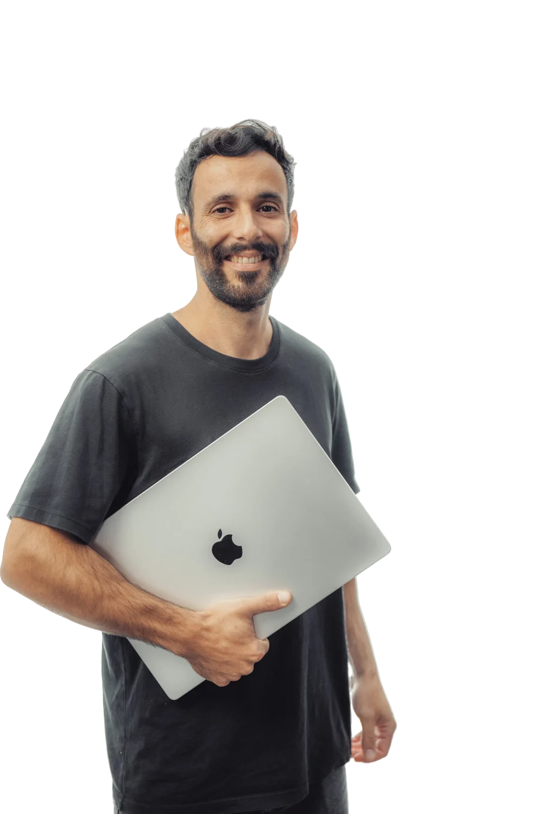
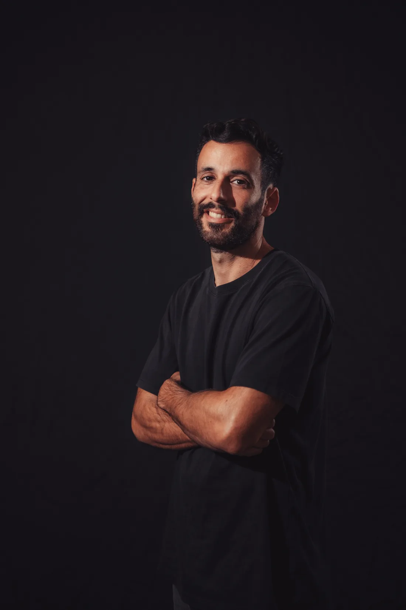

01מיפוי
קודם ממפים את מה שכבר בניתם.
לפני שנוגעים במשהו, עוברים על אתר הוורדפרס שלכם: כל עמוד, כל תמונה, כל כתובת, ואילו עמודים מביאים לכם תנועה מגוגל. מכאן נבנית תוכנית מעבר, כדי ששום דבר שעבד לא ילך לאיבוד.
העסק שלכם התקדם, והאתר נשאר מאחור? אני שומר את כל התוכן והקידום שלכם, ובונה סביבם אתר AI חדשני בעיצוב שעוצר את העין. אתם ממשיכים מאיפה שעצרתם, רק נראים כמו שאתם באמת.

(3) שלבים, ובכל אחד מהם שומרים על מה שכבר בניתם.

01מיפוי
לפני שנוגעים במשהו, עוברים על אתר הוורדפרס שלכם: כל עמוד, כל תמונה, כל כתובת, ואילו עמודים מביאים לכם תנועה מגוגל. מכאן נבנית תוכנית מעבר, כדי ששום דבר שעבד לא ילך לאיבוד.

02עיצוב
בלי תבנית מוכנה. אני מעצב את האתר מאפס, סביב מה שמייחד את העסק שלכם. לפני שמתחילים לבנות, אתם רואים בדיוק איך הוא ייראה במחשב ובנייד, ומאשרים.

03מעבר
האתר החדש נבנה בקוד מהיר ומאובטח, כל התוכן עובר אליו, וכל כתובת ישנה מפנה לחדשה, כך שהקידום שצברתם נשמר. ואתם מקבלים מערכת ניהול פשוטה, שמתאימה גם למי שלא מסתדר עם טכנולוגיה, כדי לעדכן את האתר לבד. וגם אחרי שהאתר עולה לאוויר, אני כאן.
בכל אחד מהם יש מסר אחד ברור, הרבה אוויר ותנועה שמובילה את העין למקום הנכון.
אשתי ואני חלמנו לגור בקריביים. שם אין הרבה דרכים להתפרנס חוץ מעבודה מרחוק, ומהר מאוד הבנתי שאני תלוי לגמרי ביכולת שלי להיראות. בדיוק כמו בעלי העסקים שאני עובד איתם היום.
הרבה עסקים השקיעו לפני כמה שנים באתר וורדפרס, והיום הוא נראה מאחור: איטי, מסובך לתפעול, ולא משקף את העסק שהם בנו. לקוח שמשווה אותם למתחרה עם אתר עדכני פשוט הולך אליו, בלי להגיד מילה.
אז אני בונה להם אתר AI חדש מאפס, סביב הסיפור והמוצר שלהם, ומעביר אליו את כל התוכן והקידום שכבר צברו בגוגל. מי שנכנס מתרשם, ומה שהוא רואה כבר עושה חצי מהעבודה.
כל יום עם אתר מיושן מעביר פניות ומכירות למתחרים.לשיחת היכרות קצרה
